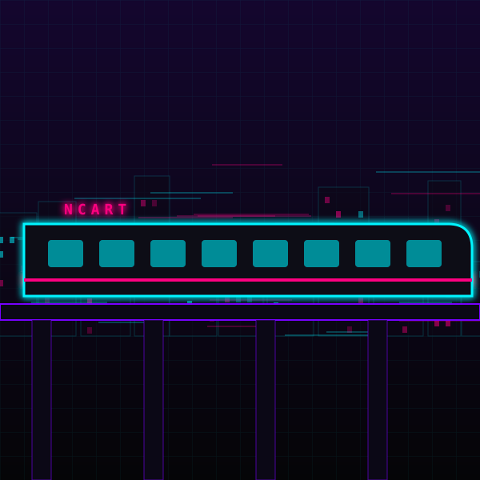

STŘEP KITSUNE · 19:40:05
Skočíš do vagónu NCART těsně před zavřením dveří. Vlak se řítí nad městem a neony se rozmazávají do čar.
Na dalším nástupišti stojí ochranka Kitsune. Jeden z nich si tě všimne a sáhne po zbrani.

Skočíš do vagónu NCART těsně před zavřením dveří. Vlak se řítí nad městem a neony se rozmazávají do čar.
Na dalším nástupišti stojí ochranka Kitsune. Jeden z nich si tě všimne a sáhne po zbrani.
